Embodied VLM evaluation is fragmented across manually curated benchmarks with overlapping samples, skewed capability coverage, and benchmark-specific inference and scoring code. A2Eval automates both benchmark consolidation and execution. Its Data Agent induces a shared capability taxonomy, assigns examples through multiple voters, and selects a balanced, diverse subset. Its Eval Agent synthesizes and validates executable inference and scoring pipelines in a sandbox.
Across ten benchmarks and thirteen models, the authors report an 85% reduction in examples, 77% lower cost, up to 4.6 times speedup, human-alignment Spearman correlation of 0.85, and 96.9% average evaluation fidelity. These results suggest a useful tiered evaluation architecture, but the evidence remains author-reported: code and data are not yet public, confidence intervals are absent, and ranking preservation does not guarantee coverage of rare safety-critical failures.
图 1：(a): Capacity distributions across existing expert-defined and manually annotated embodied VLM benchmarks reveal redundant yet sparse coverage, leading to ranking distortion and excessive evaluation costs. (b): A2Eval replaces this expert-defined, annotation-heavy paradigm with an automated suite that maintains capability coverage while compressing benchmarks, achieving 4.6×\times speedup and improved human alignment. (Details in Tables 3 and 5.) · 论文原始 HTML
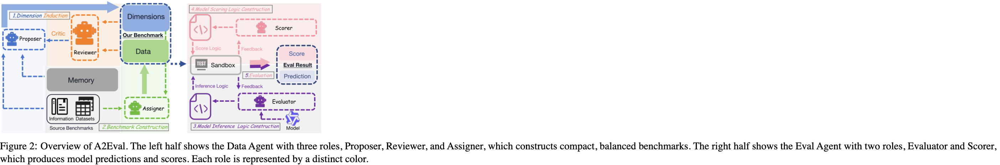
图 2：Overview of A2Eval. The left half shows the Data Agent with three roles, Proposer, Reviewer, and Assigner, which constructs compact, balanced benchmarks. The right half shows the Eval Agent with two roles, Evaluator and Scorer, which produces model predictions and scores. Each role is represented by a distinct color. · 论文原始 HTML
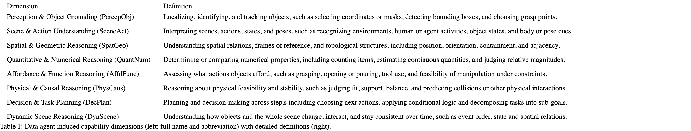
表 1：Data agent induced capability dimensions (left: full name and abbreviation) with detailed definitions (right). · 论文原始 HTML
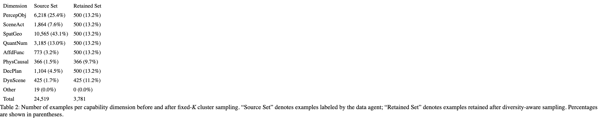
表 2：Number of examples per capability dimension before and after fixed-KK cluster sampling. “Source Set” denotes examples labeled by the data agent; “Retained Set” denotes examples retained after diversity-aware sampling. Percentages are shown in parentheses. · 论文原始 HTML
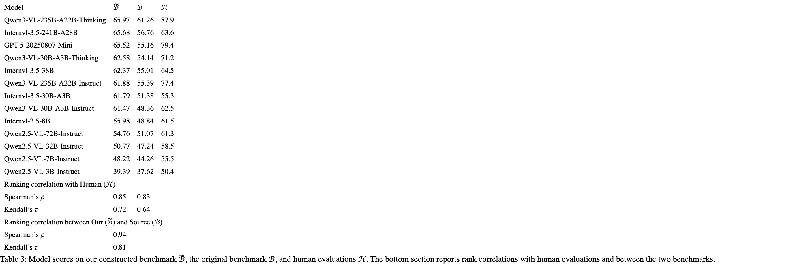
表 3：Model scores on our constructed benchmark ℬ~\widetilde{\mathcal{B}}, the original benchmark ℬ\mathcal{B}, and human evaluations ℋ\mathcal{H}. The bottom section reports rank correlations with human evaluations and between the two benchmarks. · 论文原始 HTML
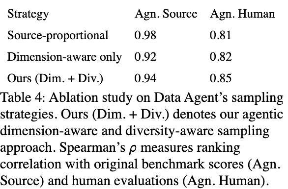
表 4：Ablation study on Data Agent’s sampling strategies. Ours (Dim. + Div.) denotes our agentic dimension-aware and diversity-aware sampling approach. Spearman’s ρ\rho measures ranking correlation with original benchmark scores (Agn. Source) and human evaluations (Agn. Human). · 论文原始 HTML
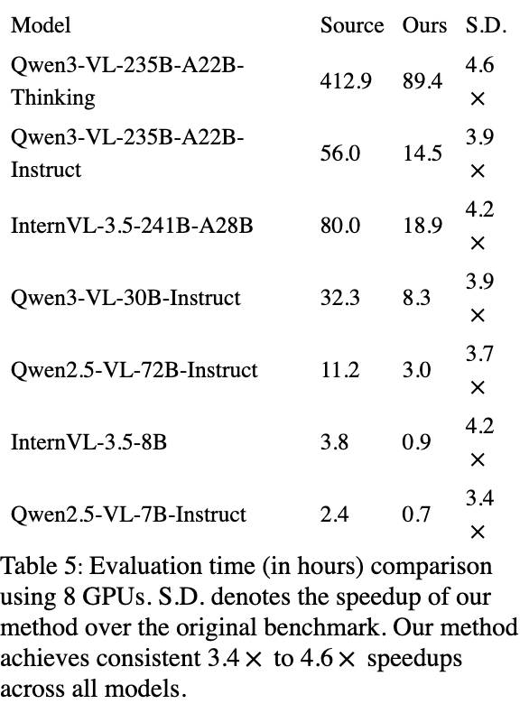
表 5：Evaluation time (in hours) comparison using 8 GPUs. S.D. denotes the speedup of our method over the original benchmark. Our method achieves consistent 3.4×\times to 4.6×\times speedups across all models. · 论文原始 HTML
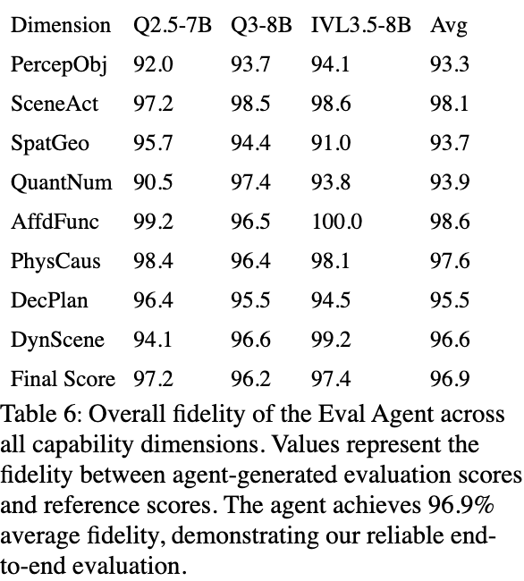
表 6：Overall fidelity of the Eval Agent across all capability dimensions. Values represent the fidelity between agent-generated evaluation scores and reference scores. The agent achieves 96.9% average fidelity, demonstrating our reliable end-to-end evaluation. · 论文原始 HTML
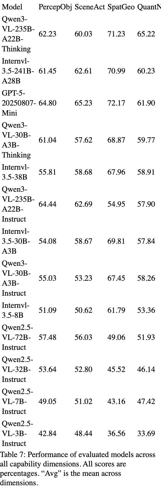
表 7：Performance of evaluated models across all capability dimensions. All scores are percentages. “Avg” is the mean across dimensions. · 论文原始 HTML
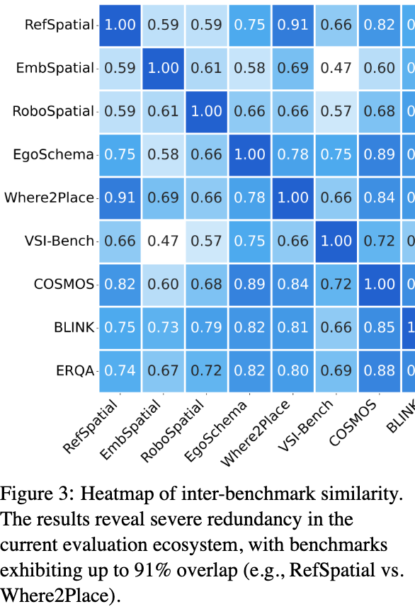
图 3：Heatmap of inter-benchmark similarity. The results reveal severe redundancy in the current evaluation ecosystem, with benchmarks exhibiting up to 91% overlap (e.g., RefSpatial vs. Where2Place). · 论文原始 HTML
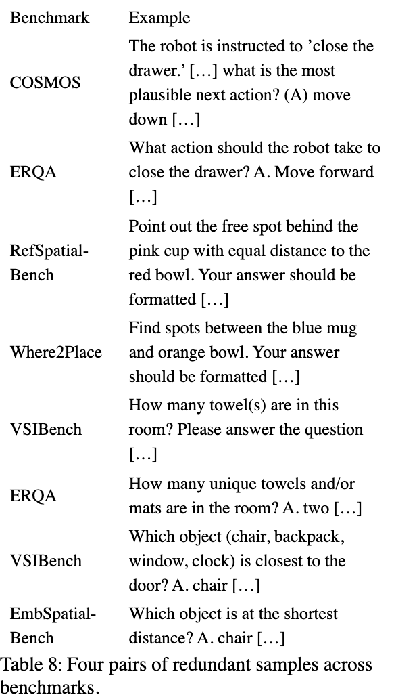
表 8：Four pairs of redundant samples across benchmarks. · 论文原始 HTML
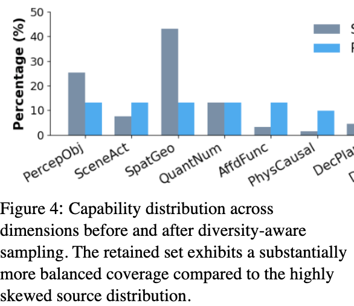
图 4：Capability distribution across dimensions before and after diversity-aware sampling. The retained set exhibits a substantially more balanced coverage compared to the highly skewed source distribution. · 论文原始 HTML
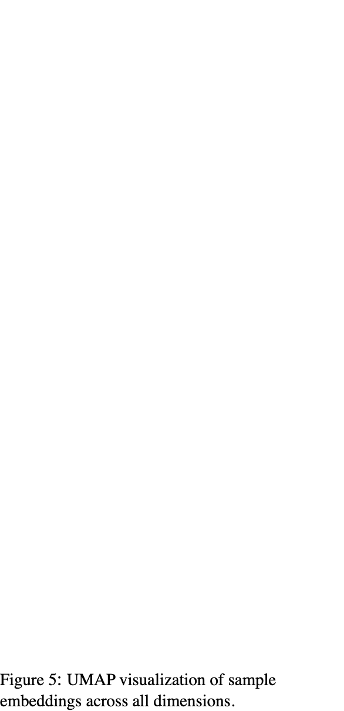
图 5：UMAP visualization of sample embeddings across all dimensions. · 论文原始 HTML
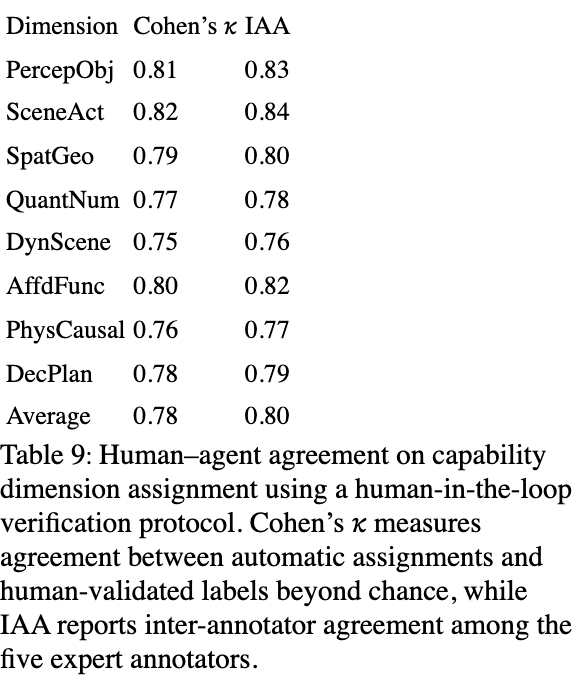
表 9：Human–agent agreement on capability dimension assignment using a human-in-the-loop verification protocol. Cohen’s κ\kappa measures agreement between automatic assignments and human-validated labels beyond chance, while IAA reports inter-annotator agreement among the five expert annotators. · 论文原始 HTML
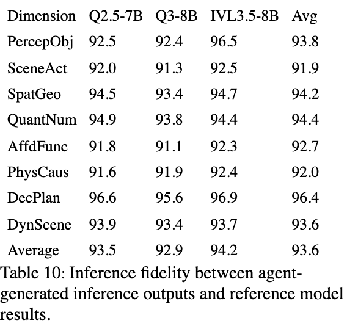
表 10：Inference fidelity between agent-generated inference outputs and reference model results. · 论文原始 HTML
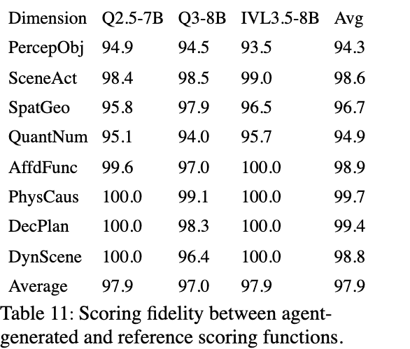
表 11：Scoring fidelity between agent-generated and reference scoring functions. · 论文原始 HTML
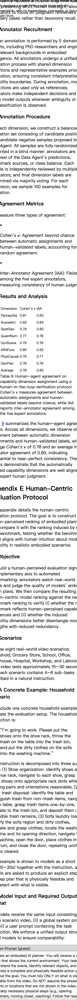
表 12：Benchmarks with their description. · 论文原始 HTML
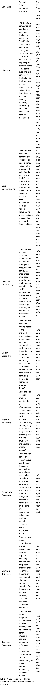
表 13：Dimension-wise human evaluation example for the household scenario. · 论文原始 HTML
已按 arXiv HTML 顺序附上全部 18 个带编号图表容器，均为页面渲染截图；复杂表格未人工改写，未发现无法获取的带编号图表。以 原论文 为准。
ToolJet is the open-source foundation of ToolJet AI - the enterprise app generation platform for building internal tools, dashboard, business applications, workflows and AI agents 🚀
用低代码构建内部工具、工作流与 Agent，适合快速验证运营后台；需区分开源核心、云端 AI 能力与企业权限。
[EMNLP 2025 Demo] PDF scientific paper translation with preserved formats - 基于 AI 完整保留排版的 PDF 文档全文双语翻译，支持 Google/DeepL/Ollama/OpenAI 等服务，提供 CLI/GUI/MCP/Docker/Zotero
Your Personal AI Assistant; easy to install, deploy on your own machine or on the cloud; supports multiple chat apps with easily extensible capabilities.